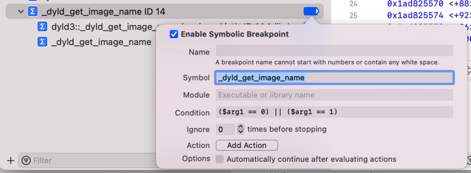

条件判断的断点举例
函数
普通例子
breakpoint set --name foo --condition '(int)strcmp(y,"hello") == 0'
==
br s -n foo -c '(int)strcmp(y,"hello") == 0'
判断MGCopyAnswer的传入参数是否是字符串UniqueDeviceID
- 判断
MGCopyAnswer的传入参数是否是字符串UniqueDeviceID- 条件判断表达式：
(bool)[$x0 isEqualToString: @"UniqueDeviceID"]- 效果
- 效果
- 条件判断表达式：

判断_dyld_get_image_name的第一个参数是0 或 1
- 判断
_dyld_get_image_name的第一个参数是0或1- 条件判断表达式：
($arg1 == 0) || ($arg1 == 1)- 
- 断点生效的效果
- 条件判断表达式：
判断-[NSString stringByAppendingString:]传入参数是否为空
- 判断
-[NSString stringByAppendingString:]传入参数是否为空- 注：此处是
objc_msgSend，所以第一个参数是id=self，第二个参数是selector，第三个参数才是真正的传入的值 - 条件判断表达式：
(BOOL)($arg3 == NULL)
- 注：此处是
判断objc_alloc_init输入参数是类AADeviceInfo的Class
- 判断
objc_alloc_init输入参数是类AADeviceInfo的Class- 条件过滤表达式写法
- 三种写法
NSStringFromClass(bool)[NSStringFromClass($x0) isEqualToString: @"AADeviceInfo"]class_getName(int)strcmp((char *)class_getName($x0),"AADeviceInfo")==0object_getClassName(int)strcmp((char *)object_getClassName($x0),"AADeviceInfo")==0
- 三种写法
- => lldb命令行中
NSStringFromClassbr s -n "objc_alloc_init" -c '(bool)[NSStringFromClass($x0) isEqualToString: @"AADeviceInfo"]'class_getNamebr s -n "objc_alloc_init" -c '(int)strcmp((char *)class_getName($x0),"AADeviceInfo")==0'object_getClassNamebr s -n "objc_alloc_init" -c '(int)strcmp((char *)object_getClassName($x0),"AADeviceInfo")==0'
- => Xcode图形界面中
class_getNameCondition:(int)strcmp((char *)class_getName($x0),"AADeviceInfo")==0
NSStringFromClassCondition:(bool)[NSStringFromClass($x0) isEqualToString: @"AADeviceInfo"]
object_getClassNameCondition:(int)strcmp((char *)object_getClassName($x0),"AADeviceInfo")==0
- 条件过滤表达式写法

某行汇编代码
libMobileGestalt.dylib的___lldb_unnamed_symbol317中的+28行汇编代码
给libMobileGestalt.dylib的___lldb_unnamed_symbol317中的+28行汇编代码
0x194da0c1c <+28>: mov x19, x0
加条件判断断点：
(bool)[$x0 isEqualToString: @"UniqueDeviceID"]
断点触发效果：
objc_alloc_init的+44行的objc_msgSend行的汇编代码
objc_alloc_init的+44行的objc_msgSend行的汇编代码- 判断输入参数是类
AADeviceInfo的Instance实例- 条件判断表达式
objc_getClassCondiction:(bool)[$x0 isKindOfClass: (Class)objc_getClass("AADeviceInfo")]
classNameCondiction:(bool)[[$x0 className] isEqualToString: @"AADeviceInfo"]
object_getClassNameCondiction:(int)strcmp((char *)object_getClassName($x0),"AADeviceInfo")==0- 触发效果
- 条件判断表达式
- 判断输入参数是类


__88-[NSXPCConnection _sendInvocation:orArguments:count:methodSignature:selector:withProxy:]_block_invoke_3中的+208行汇编代码
- 汇编代码
Foundation`__88-[NSXPCConnection _sendInvocation:orArguments:count:methodSignature:selector:withProxy:]_block_invoke_3: ... 0x1830c6a6c <+188>: ldr x3, [x19, #0x38] 0x1830c6a70 <+192>: ldp x0, x4, [x19, #0x20] 0x1830c6a74 <+196>: adrp x8, 297427 0x1830c6a78 <+200>: add x1, x8, #0x5c6 ; =0x5c6 0x1830c6a7c <+204>: mov x2, x21 -> 0x1830c6a80 <+208>: bl 0x1815b9dc8 ; symbol stub for: objc_msgSend - 通过调试看到值
(lldb) reg r x0 x0 = 0x0000000283265c20 (lldb) po 0x0000000283265c20 <NSXPCConnection: 0x283265c20> connection to service with pid 125 named com.apple.ak.anisette.xpc - 想要加上条件判断实现：
- x0中的NSXPCConnection的属性serviceName值是：com.apple.ak.anisette.xpc
- 研究条件判断写法的过程
- lldb中的po调试
po ((NSXPCConnection*)$x0).serviceName
- iOS的ObjC的写法
[(NSXPCConnection*)$x0 serviceName]
- 类似C语言的写法
(NSXPCConnection*)$x0).serviceName
- lldb中的po调试
- 条件判断的表达式写法
[[(NSXPCConnection*)$x0 serviceName] isEqualToString: @"com.apple.ak.anisette.xpc"] - 断点生效效果
- 但是
- 另外2种C语言的写法：
strcmp写法(bool)((int)strcmp(((NSXPCConnection*)$x0).serviceName,"com.apple.ak.anisette.xpc")==0)strstr写法strstr((const char*)(((NSXPCConnection*)$x0).serviceName),"com.apple.ak.anisette.xpc")!=NULL- -》最终无效 -》无法触发条件断点
- 另外2种C语言的写法：